מגנטותרפיה פולסטית 3D פטנטית — הדור הבא לקליניקות ולטיפול ביתי
Biomag מפתחת ומייצרת מכשירי מגנטותרפיה פולסטית עם טכנולוגיית 3D פטנטית מאז 1991. מכשירי Biomag מסייעים לאנשים ברחבי העולם לשפר את בריאותם. הדור האחרון — סדרת Biomag 3D-e — קובע שוב את הסטנדרט לכל התעשייה. קבלו את הטוב ביותר לבריאותכם ובחרו את מכשיר Biomag שלכם.
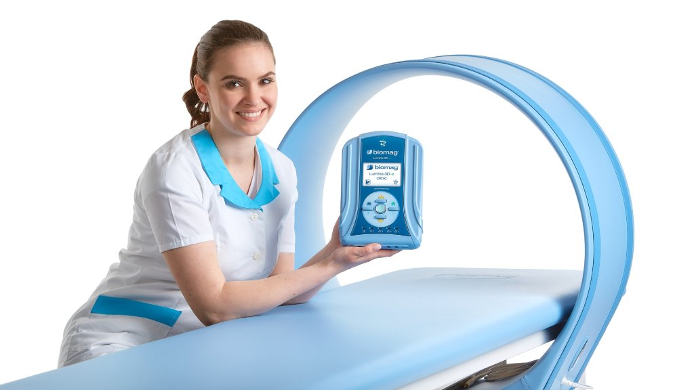
תוצאות מוכחות מדעית הנתמכות במחקרים קליניים רבים
הסבר פשוט על טכנולוגיית המגנטותרפיה הפולסטית ומה היא עושה לגוף
PEMF (Pulsed Electromagnetic Field) היא טכנולוגיה שמשדרת שדות מגנטיים פולסטיביים אל תוך הגוף. השדה המגנטי חודר לעומק הרקמה ומעורר את התאים לפעולה, בדיוק כפי שהגוף עושה באופן טבעי — אבל חזק וממוקד יותר. טכנולוגיית 3D של Biomag יוצרת שדה תלת-ממדי שמכסה שטח טיפול גדול יותר וחודר לעומק רב יותר מטכנולוגיות רגילות.
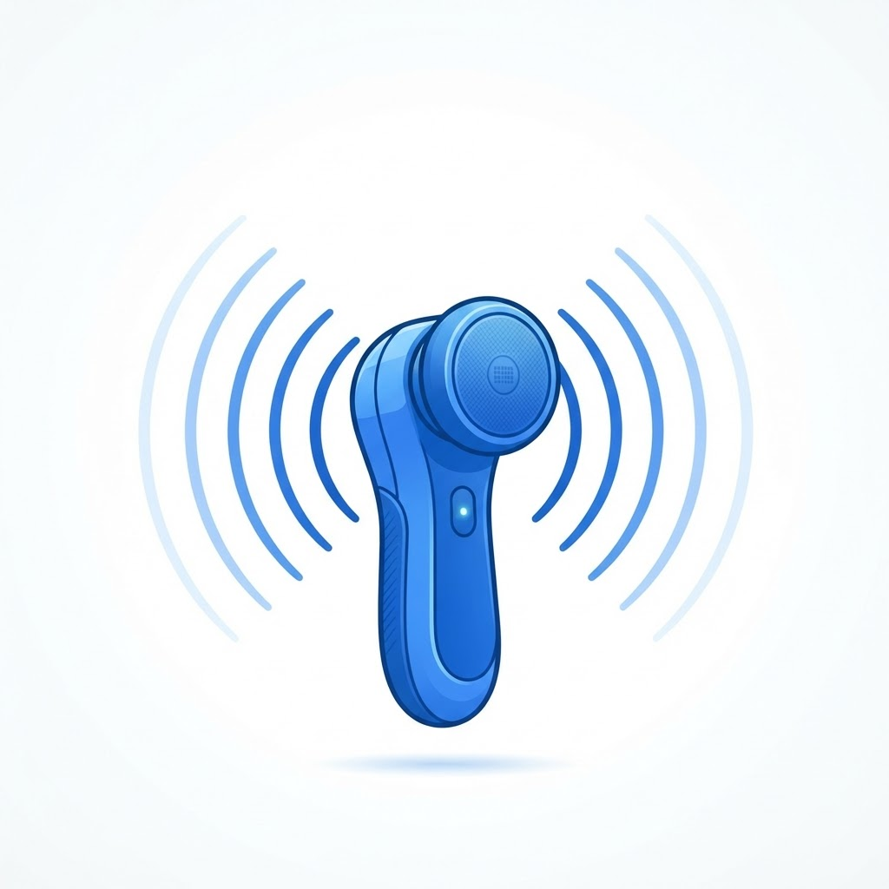
המכשיר יוצר שדות מגנטיים פולסטיביים דרך האפליקטור שמונח על הגוף
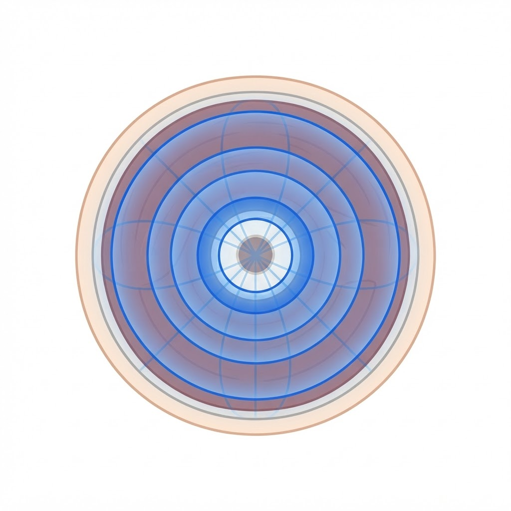
השדה המגנטי נכנס לעומק הרקמה מכל הכיוונים — לא רק משטח העור אלא גם לשרירים, מפרקים ועצמות
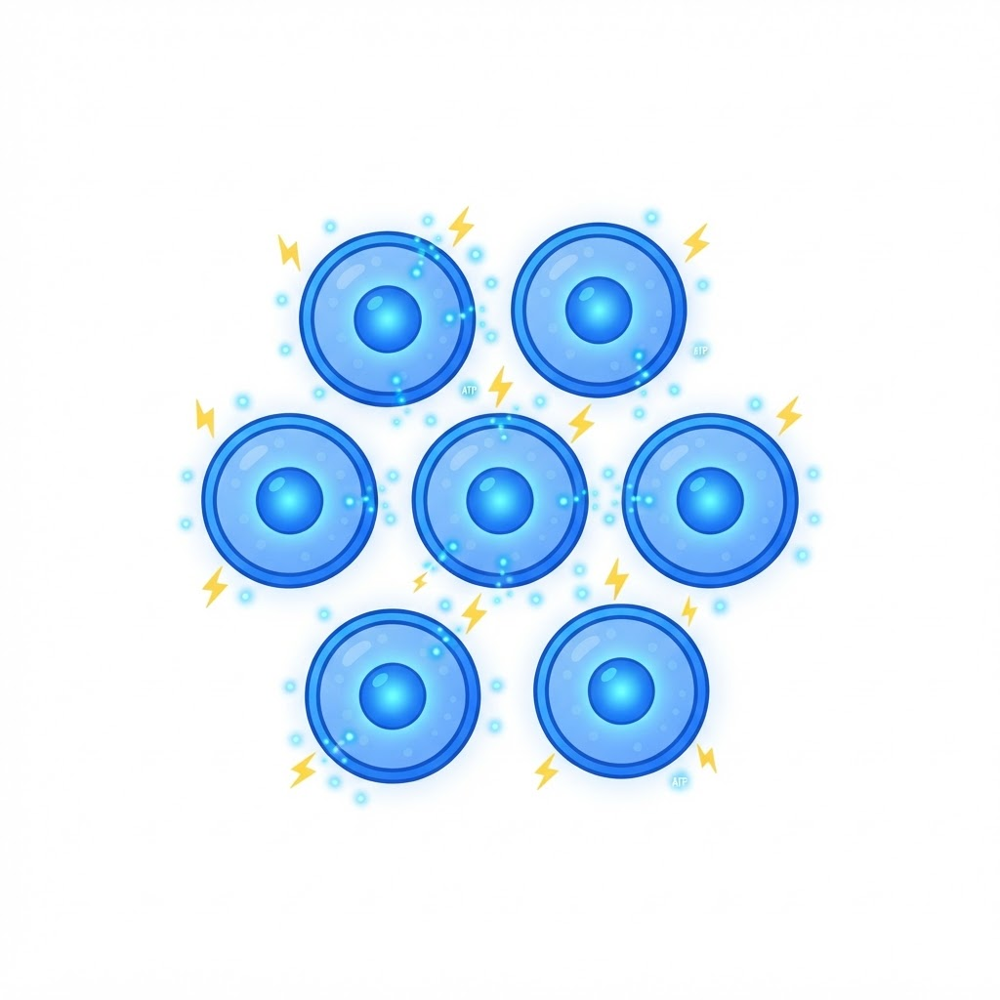
השדה מעורר את התאים לייצר אנרגיה (ATP), משפר את קרום התא ומזרים דם וחמצן לאזור
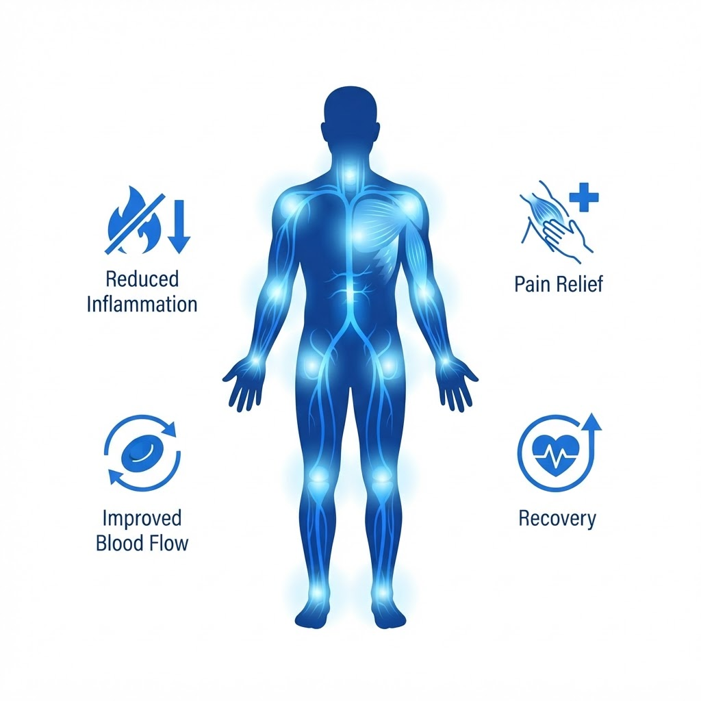
התוצאה: כאב פוחת, דלקת יורדת, זרימת הדם משתפרת והריפוי מואץ — באופן טבעי וללא תרופות
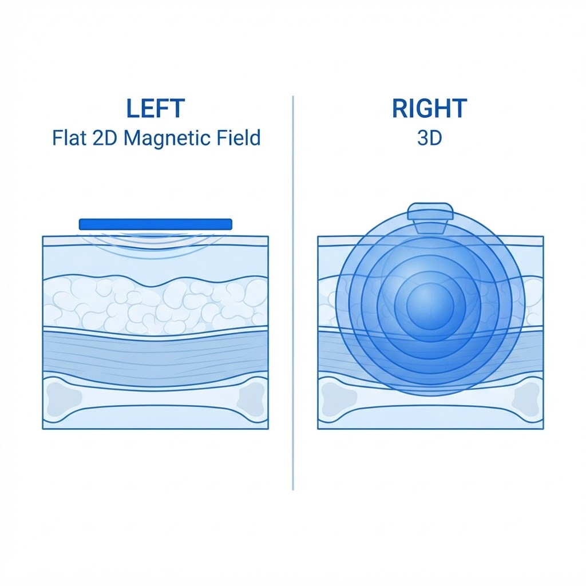
מגנטותרפיה רגילה (2D)
שדה שטוח, חודר רדוד, מכסה שטח קטן
Biomag 3D
שדה תלת-ממדי, חודר עמוק, מכסה שטח גדול
אפקטים הטיפוליים של מגנטותרפיה 3D של Biomag מחולקים לשישה אפקטים טיפוליים בסיסיים. אפקטים אלו יכולים להשפיע לחיוב על תסמינים של מגוון בעיות בריאותיות ובכך לסייע ביעילות בטיפולן.
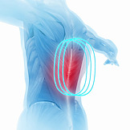
מקדם הפחתת כאב
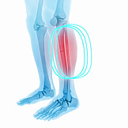
מקדם ריפוי והתחדשות
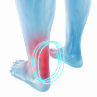
מקדם הפחתת נפיחות
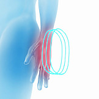
מקדם הרחבת כלי דם וזרימת דם
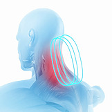
מקדם הפחתת עווית וכאב
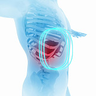
מקדם חילוף חומרים ודטוקסיפיקציה
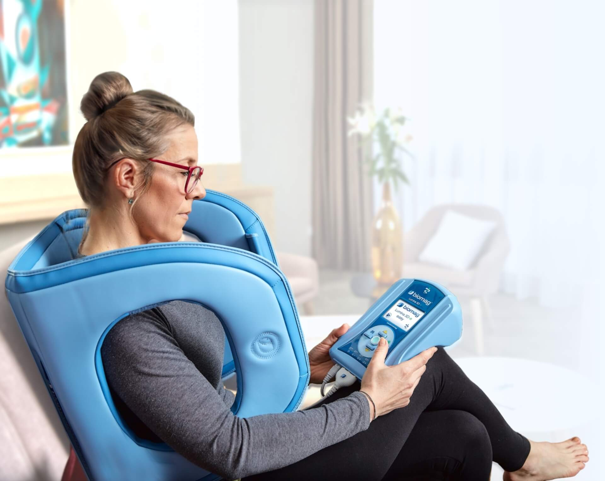
מגנטותרפיה ביתית מאפשרת טיפול קבוע, חוזר וארוך-טווח — לתוצאות טיפוליות מיטביות. הטיפול חוסך זמן ועלות-יעיל לטווח ארוך, ומכשירי Biomag יכולים לשמש את כל בני המשפחה.
מגנטותרפיה לאנשי מקצוע חייבת לעמוד בדרישות הגבוהות ביותר. Biomag מובילה בתחום זה — הודות לאפליקטורים קליניים יעילים וטכנולוגיית 3D פטנטית, בתי חולים וקליניקות מקבלים מכשירים באיכות הגבוהה ביותר. רופאים יעריכו את ההגדרה המקצועית של פרמטרי הטיפול.
מגנטותרפיה וטרינרית של Biomag מספקת לבעלי חיים את כל היתרונות של שיטה זו. אפליקטורים מספקים נוחות ונוחיות גבוהה לסוסים ולבעלי חיים קטנים כגון כלבים וחתולים. יחד עם מומחים מובילים פיתחנו קו חדש של מגנטותרפיה וטרינרית.
הטכנולוגיה הייחודית 3D של Biomag יוצרת שדה מגנטי תלת-ממדי שחודר לעומק הרקמה ומכסה שטח טיפול גדול יותר בהשוואה לטכנולוגיות רגילות — לתוצאות קליניות מהירות ויציבות.
טיפול גמיש וממוקד עם 200 פרמטרים ומעל 200 ערכים לחולים. ניתן לטפל במספר מטופלים במקביל עם תוכניות שונות.
מכשיר רפואי Class IIa, אישור CE 2265, תקן EU MDR, ייצור צ'כי — EU.
מיועד גם לטיפול ביתי — פשוט, בטוח ויעיל ללא ידע מוקדם. כל המשפחה יכולה להשתמש.
אורתופדיה, נוירולוגיה, ריאומטולוגיה, שיקום, ספורט, רפואה וטרינרית ועוד.
מגוון ערכות לקליניקה, לבית ולוטרינריה — כל אחת מותאמת לצרכים שונים
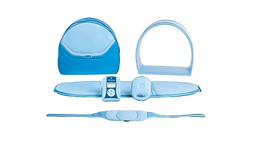
קליניMEDICAL DEEP CARE
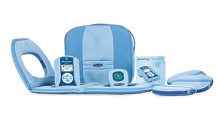
הפופולרי ביותרFINEST SELECTION
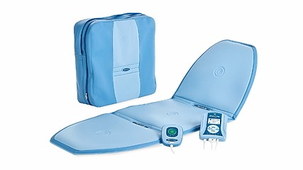
רב-מכר לאנשי מקצועNEUTRAL TREATMENT
מקור מידע איכותי על מצבים ותחלואות נפוצים — גורמים, תסמינים וטיפול
מכשירי Biomag עוזרים כיום לאנשים בכל יבשת. אלפי משתמשים מרוצים וקליניקות מובילות משתמשים במכשירים החדשניים.